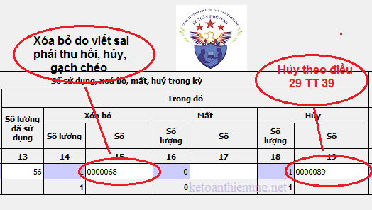

Khi lập báo cáo tình hình sử dụng hóa đơn có rất nhiều bạn đang vướng mắc giữa 2 cột XÓA BỎ và HỦY hóa đơn, Kế toán Diệu Tâm xin hướng dẫn cách ghi cột xóa bỏ và hủy hóa đơn theo quy định tại Thông tư số 39/2014/TT-BTC.
1. Phân biệt hóa đơn xóa bỏ:
a. Theo điều 20 Thông tư số 39/2014/TT-BTC hướng dẫn xử lý đối với hóa đơn đã lập:
- Nếu phát hiện hóa đơn lập sai (chưa giao cho người mua) thì gạch chéo các liên và lưu giữ số hóa đơn đó lại.
- Nếu phát hiện hóa đơn lập sai (đã giao cho người mua nhưng chưa kê khai) thì lập biên bản thu hồi các liên của hóa đơn viết sai. Và gạch chéo các liên, lưu giữ hóa đơn đó.
b. Theo khoản 2.8 phụ lục 4 Thông tư số 39/2014/TT-BTC hướng dẫn:
- Nếu người mua hàng là đối tượng không có hóa đơn, khi trả lại hàng hoá, 2 bên phải lập biên bản ghi rõ lý ro trả lại hàng và bên bán phải lập biên bản thu hồi hóa đơn đã lập.
Như vậy: Tất cả các hóa đơn viết sai dù đã xé hay chưa xé khỏi cuống, dù đã giao hay chưa giao cho khách mà phải gạch chéo, thu hồi hoặc hủy thì các bạn cho hết vào cột “XÓA BỎ”
Xem thêm: Cách xử lý hoá đơn viết sai
----------------------------------------------------------------------------------------
2. Phân biệt hủy hóa đơn:- Cột “HỦY”: Là những hóa đơn phải hủy theo quy định tại điều 29 Thông tư số 39/2014/TT-BTC
Theo điều 29 Thông tư số 39/2014/TT-BTC quy định Các trường hợp hủy hóa đơn:
a) Hoá đơn đặt in bị in sai, in trùng, in thừa phải được hủy trước khi thanh lý hợp đồng đặt in hoá đơn.
b) DN có hoá đơn không tiếp tục sử dụng phải thực hiện huỷ hoá đơn.
- Thời hạn huỷ hoá đơn chậm nhất là ba mươi (30) ngày, kể từ ngày thông báo với cơ quan thuế.
- Trường hợp cơ quan thuế đã thông báo hóa đơn hết giá trị sử dụng (trừ trường hợp thông báo do thực hiện biện pháp cưỡng chế nợ thuế), tổ chức, hộ, cá nhân phải hủy hóa đơn, thời hạn huỷ hoá đơn chậm nhất là mười (10) ngày kể từ ngày cơ quan thuế thông báo hết giá trị sử dụng hoặc từ ngày tìm lại được hoá đơn đã mất.
c) Các loại hoá đơn đã lập của các đơn vị kế toán được hủy theo quy định của pháp luật về kế toán.
d) Trường hợp thay đổi tên, địa chỉ Công ty:
- Đối với các số hóa đơn đã thực hiện thông báo phát hành nhưng chưa sử dụng hết có in sẵn tên, địa chỉ trên từ hóa đơn, khi có sự thay đổi tên, địa chỉ -> Nếu tổ chức không có nhu cầu sử dụng số hóa đơn đã phát hành nhưng chưa sử dụng hết thì thực hiện hủy các số hóa đơn chưa sử dụng và thông báo kết quả hủy hóa đơn với cơ quan thuế nơi chuyển đi.
Xem thêm: Thủ tục hủy hóa đơn giá trị gia tăng

Chúc các bạn thành công!
_______________________________________________